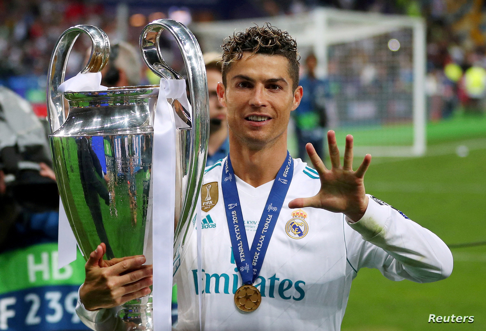
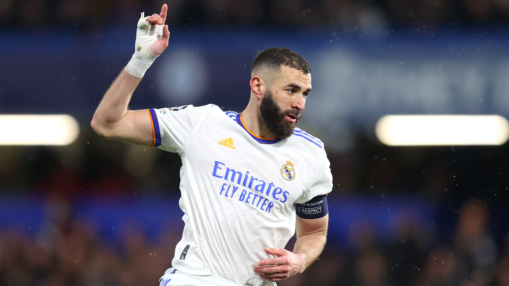
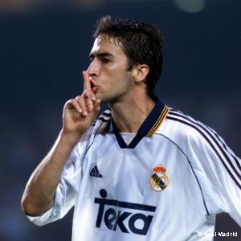

Real Madrid" redirects here. For the basketball team, see Real Madrid Baloncesto. For other uses, see Real Madrid (disambiguation). "Los Blancos" redirects here. For the Argentine village, see Los Blancos, Salta. Real Madrid Club de Fútbol meaning Royal Madrid Football Club), commonly referred to as Real Madrid, is a Spanish professional football club based in Madrid who have been playing in La Liga since 1929.
| Players | club playing period | Goals | Matches |
|---|---|---|---|
|

Ceristiano Ronaldo |
2009-2018 | 451 | 438 |
|

Karem Panzima |
2009-2023 | 331 | 412 |
|

Raul |
1992-2010 | 323 | 741 |
Real Madrid's origins go back to when football was introduced to Madrid by the academics and students of the Institución Libre de Enseñanza, which included several Cambridge and Oxford University graduates. They founded (Sociedad) Sky Football in 1897, commonly known as La Sociedad (The Society) as it was the only one based in Madrid, playing on Sunday mornings at Moncloa. In 1900, conflict between members caused some of them to leave and create a new club, Nueva Sociedad de Football (New Society of Football), to distinguish themselves from Sky Football. Among the dissenters were Julián Palacios, recognized as the first Real Madrid president, Juan Padrós and Carlos Padrós, the latter two being brothers and future presidents of Real Madrid. In 1901, this new club was renamed as Madrid Football Club. for more click here.
Santiago Bernabéu became president of Real Madrid in 1943.[49] Under his presidency, the club was rebuilt after the Civil War, and he oversaw the construction of the club's current stadium, Estadio Real Madrid Club de Fútbol (now known as the Estadio Santiago Bernabéu), and its training facilities Ciudad Deportiva. Additionally, during the 1950s former Real Madrid Amateurs player Miguel Malbo founded Real Madrid's youth academy, or "cantera," known today as La Fábrica. Beginning in 1953, he embarked upon a strategy of signing world-class players from abroad, the most prominent being Alfredo Di Stéfano.[50]